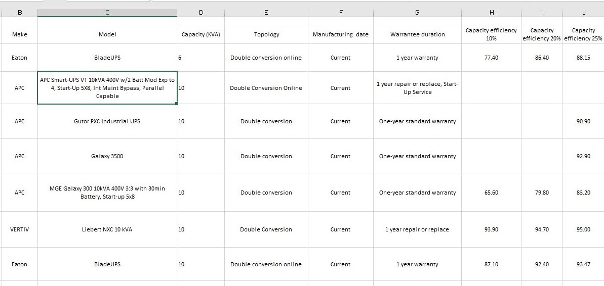

Shakur McFarlane
Front-end Developer
I am a highly motivated web developer with a technical background in computing.
Projects
Analysing the energy consuption of UPS systems in data centres
For my project I had to conduct hours and hours of research on UPS’s so that I was able to build a spreadsheet of information and analyse the data for companies to be able to use. Companies would be able to look at their current UPS and data load capacity and see if they would save using another UPS.
Download Report
Slapway logo
I recently completed a photoshop online course and decided to create a logo for my team, using my favourite teams logo as a template.
View imageSkills
Below I have listed all my relevant skills.
Hard Skills
- SQL
- MS ACCESS
- Experienced with databases
- HTML
- CSS
- JAVASCRIPT
- Basic technical knowledge
Soft Skills
- organised
- Team-Working
- Hard-Working
- Self-Motivated
Work Experience
Below I have listed my previous or current work.
Technical Assistant
ST James Hatcham
02/2015-03/2015
During my work experience, I obtained many new skills such as how to administrate the database which I particularly enjoyed. Since that time, I have managed to increase my knowledge of system administration and am now keen, enthusiastic and to join an ambitious team.
Education
University Of East London-Docklands
Computing For Business,2015-2018
Completed my degree with a 2:1.
Harris sixth form
ICT-Diploma, Business Sub-Diploma, 2013-2015
Completed my degree with a 2:1.
Peckham Academy
Subjects, Grades, 2008-2013
- Maths, C
- English, C
- Science, C
- ICT, C
- Business, Distinction
Hobbies
Football
Football is one of my main hobbies which i have been playing since i can remember. Playing football has helped me gain many useful skills such as team work and leadership skills, which are useful in any enviroment.
Games
Another hobby of mine is playing games as i find it to be a great stress reliever and its enjoyable. I currently own a ps4 and the games i play most are FIFA 20, Fortnite and GTA 5. Eventhough I enjoy playing games Im starting to focus more on other stuff and only play when my friends are playing too.
TVShows
Watching films and TV shows are something I really enjoy especially when you find a new and exiting tv series. My favorite TV Shows that I have wathced are game of thrones, top boy, and vikings althought there are alot more tv shows that i also really enjoy like breaking bad and power. Im also a fan of films mainly action/gangster however i watched a film called all the bright places and thought it was amazing. As well as films im also a fan of anime eventhough i havent watched any in a while, my favuorite anime has to be tokyo ghoul even if at the start I hated it.